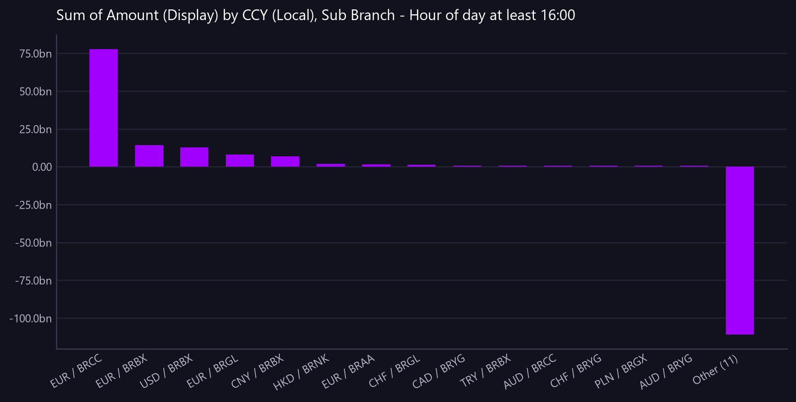

Sum of Amount (Display) by CCY (Local), Sub Branch - Hour of day at least 16:00
Value settling after 16:00, by currency and desk. Late concentration is where an operational delay becomes a liquidity problem.
Asked as How much ledger value settles after 16:00 each day, and which currencies and desks does it sit in?

Only the largest 14 categories are charted; the remainder are combined into a single 'Other' bar. The full breakdown is in the table.
Commentary
The report provides a breakdown of the total ledger value settling after 16:00 each day, categorized by currency and desk. The most significant contributor is the EUR currency, particularly in the BRCC sub-branch, with a substantial amount of 77,665,853,366.72. Notably, the BRBX sub-branch also shows significant activity in EUR and USD, with amounts of 14,375,758,416.69 and 12,825,628,251.33, respectively. An operations reader should closely examine the negative value in the "Other (111)" category, which stands at -114,370,900,617.22, as it may indicate an imbalance or offset that requires further investigation.
| CCY (Local) | Sub Branch | Amount (Display) |
|---|---|---|
| EUR | BRCC | 77,665,853,366.72 |
| EUR | BRBX | 14,375,758,416.69 |
| USD | BRBX | 12,825,628,251.33 |
| EUR | BRGL | 8,215,181,048.53 |
| CNY | BRBX | 6,904,845,115.35 |
| HKD | BRNK | 1,961,290,667.33 |
| EUR | BRAA | 1,729,653,242.57 |
| CHF | BRGL | 1,174,690,820.58 |
| CAD | BRYG | 725,606,616.84 |
| TRY | BRBX | 721,085,729.09 |
| AUD | BRCC | 701,056,431.10 |
| CHF | BRYG | 686,153,775.95 |
| PLN | BRGX | 678,580,431.02 |
| AUD | BRYG | 638,413,349.78 |
| AUD | BRMD | 548,436,564.28 |
| GBP | BRBX | 522,447,232.24 |
| GBP | BRNK | 456,637,020.28 |
| GBP | BRYG | 393,128,583.71 |
| AUD | BRGL | 337,148,648.97 |
| MXN | BRMD | 314,259,848.27 |
| GBP | BRAA | 310,121,979.10 |
| EUR | BRGX | 238,433,875.04 |
| SAR | BRGX | 198,212,179.22 |
| INR | BRNK | 172,301,864.09 |
| Other (111) | -114,370,900,617.22 |
Limitations of this view
- 135 groups were returned. The 24 largest are shown individually and the remaining 111 are combined into "Other" - a breakdown this long is not readable as a management view. Ask for a specific group, or a top-N, to go further.
- The view is scoped to the value date range from 2026-07-20 to 2026-08-18.
- The amounts are translated using static synthetic FX rates to GBP.
- The data is synthetic and non-production.
Downloads
{kind=link}
The Markdown documents everything considered, so a reader can hand it to an AI and ask follow-up questions about this view.
How this was produced
{
"view": "business_ledger",
"sheet": "Business Ledger Txn View",
"source_file": "synthetic_liquidity_month.xlsx",
"mode": "aggregate",
"filters": [
{
"column": "Hour of day",
"operator": "gte",
"value": "16:00"
}
],
"group_by": [
"CCY (Local)",
"Sub Branch"
],
"time_bucket": null,
"measures": [
"sum of Amount (Display)"
],
"columns": [],
"sort_by": null,
"limit": null,
"join": null,
"derived": [
"Hour of day"
],
"currency_corrections": [
"135 groups were returned. The 24 largest are shown individually and the remaining 111 are combined into \"Other\" - a breakdown this long is not readable as a management view. Ask for a specific group, or a top-N, to go further."
],
"data_as_of": "2026-08-18T21:35:41",
"measure": "Amount (Display)",
"aggregation": "sum",
"rows_in_view": 9780,
"rows_after_filters": 1589,
"rows_returned": 25,
"executed_at": "2026-08-20T11:29:42"
}